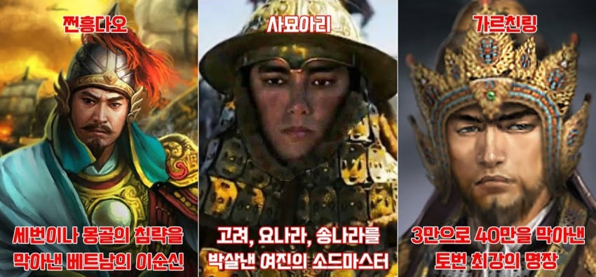
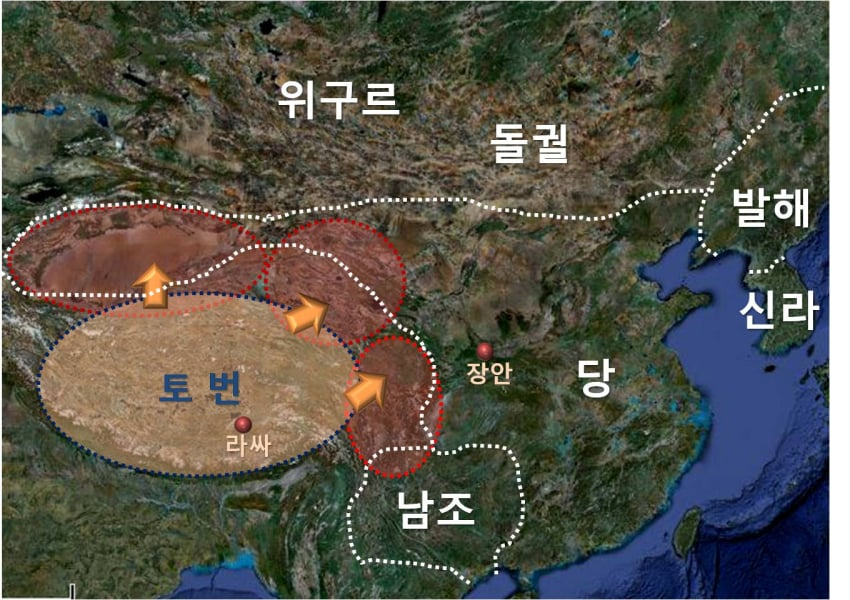
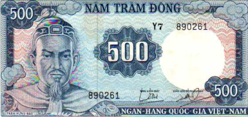
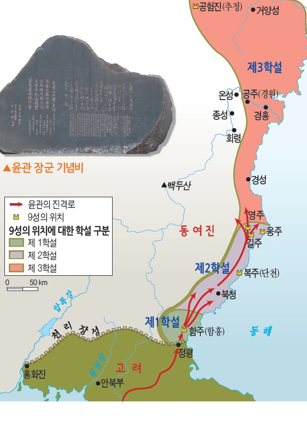
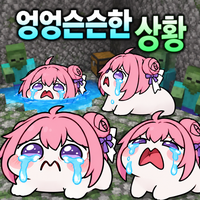

(칭기즈칸, 아골타, 누르하치 등 군주출신들은 뺌)

1. 가르친링
당나라의 최대 숙적 토번제국의 명장
(토번의 연개소문)

당나라의 4번의 대대적인 침공을 막아낸 당대 최고 명장
대표적인 전투로 설인귀의 10만대군을 궤멸시킨 대비천 전투
40만의 당군을 물리친 소라한산 전투가 있었다
왕보다 더 권력이 강한 권신이었는데, 왕과 친왕파에 의해 가문과 함께 멸당함

2. 쩐흥다오
베트남 구국의 명장이자, 민족의 군신

당대 최강국 몽골제국의 대대적인 3차례 침공을 모두 막아내었다
그가 지은 유명한 병서인 "병서요략"은 게릴라전의 진수를 담고 있다고 평가받는데,
미국이 개털린 베트남전에서 베트콩 장성, 장교들은 병서요략을 필수 군교재로 배운 것으로 유명함
70세까지 존경받으며 천수를 누렸고 죽어서는 신으로 추앙받아 사당에 모셔졌다

3. 사묘아리
금사에 기록된 곰과 같은 육대명장 중 1인
18세에 고려 동북9성 탈환전쟁에 참가해서 엄청난 공을 세운다

갈라수전투에서 고려장수를 직접 창으로 찔러 죽이고 패퇴시키고,
뒤따라 구원오는 5만, 7만의 고려군을 차례로 박살내었다
여진이 동북 9성 중 2성을 재탈환하자 고려조정은 발칵 뒤집혔고, 마라톤 회의 끝에 어렵게 얻고 쌓은 피같은 동북9성을 여진한테 반환한다..
이게 사묘아리 만 18세의 때의 일..
(금사가 워낙 뻥튀기가 심해서 1~2만명 정도 박살낸 것으로 추정.. 동북 2성 뺏긴건 팩트 맞음)

그 밖에 거란과의 전투에서 800으로 수만명 이긴다던지, 요나라 점령지 반란군 10만을 몇천으로 강이 막히도록 시체쌓기놀이했다던지, 요나라 수만대군을 100명으로 장판파 철군시킨다던지, 도망가는 1000척 배를 뒤쫓아 27척으로 수몰시킨다던지
송나라와의 전투에서 송군 8만 격파, 10만 격파, 송 수군 멸망시킨 소소한 전과가 있다
(역시 숫자는 뻥튀기가 있을 확률이 높다. 전공은 사실이지만)
78세의 나이로 천수를 누리다 죽었고, 죽기 직전에 금 해릉양왕으로부터 한국공(韓國公) 작위를 받는다

댓글
수집 당시 댓글 123개
ㅇㅇ · 11.05 21:52:22
ㅇㅇ · 11.05 21:53:10
형아어디가 · 11.05 21:53:12
· 형아어디가 · 11.05 21:53:37
· 형아어디가 · 11.05 21:53:57
· 형아어디가 · 11.05 21:54:09
· ㅇㅇ · 11.05 22:01:02
· ㅇㅇ · 11.06 01:00:53
레인보우 · 11.05 21:53:22
ㅇㅇ · 11.05 21:53:35
· ㅇㅇ · 11.05 21:54:21
· ㅇㅇ · 11.05 22:06:46
· ㅇㅇ · 11.05 22:07:04
· ㅇㅇ · 11.05 22:14:13
· ㅇㅇ · 11.05 22:16:38
· 욕받이 · 11.05 22:18:22
· ㅇㅇ · 11.05 22:20:19
· ㅇㅇ · 11.05 22:46:24
캐피탈리즘 · 11.05 21:53:43
ㅇㅇ · 11.05 21:53:48
· ㅇㅇ · 11.05 22:04:14
· ㅇㅇ · 11.05 22:33:03
· ㅇㅇ · 11.05 22:34:51
삭제됨 · 11.05 21:54:20
· 디오니소스 · 11.05 22:02:00
ㅇㅇ · 11.05 21:54:54
· ㅇㅇ · 11.05 21:55:01
삭제됨 · 11.05 21:55:46
· ㅇㅇ · 11.05 22:06:04
어린이사랑 · 11.05 21:56:33
ㅇㅇ · 11.05 21:56:59
· ㅇㅇ · 11.05 22:07:35
ㅇㅇ · 11.05 21:57:39
ㅇㅇ · 11.05 21:57:48
ㅇㅇ · 11.05 21:58:22
ㅇㅇ · 11.05 21:58:55
환사타이다 · 11.05 21:59:20
ㅇㅇ · 11.05 21:59:49
ㅇㅇ · 11.05 22:01:02
ㅇㅇ · 11.05 22:01:55
타카기쨩 · 11.05 22:04:30
· ㅇㅇ · 11.05 22:05:29
· ㅇㅇ · 11.05 22:07:09
· 타카기쨩 · 11.05 22:09:02
· ㅇㅇ · 11.05 22:11:29
· ㅇㅇ · 11.05 22:20:04
· 미주갤하려고가입 · 11.05 22:27:13
· ㅇㅇ · 11.05 22:41:59
· ㅇㅇ · 11.05 22:49:58
· ㅇㅇ · 11.05 22:53:24
· ㅇㅇ · 11.05 22:59:36
· 우항 · 11.05 23:07:58
· ㅇㅇ · 11.05 23:09:50
· ㅇㅇ · 11.05 23:44:35
· ㅇㅇ · 11.06 00:03:12
· ㅇㅇ · 11.06 00:20:35
· ㅇㅇ · 11.06 02:30:04
· ㅇㅇ · 11.06 02:30:24
ㅇㅇ · 11.05 22:07:55
· ㅇㅇ · 11.05 22:08:39
· ㅇㅇ · 11.05 22:09:15
· ㅇㅇ · 11.05 22:16:32
· ㅇㅇ · 11.05 22:23:46
· ㅇㅇ · 11.05 22:58:05
· ㅇㅇ · 11.05 22:59:52
ㅇㅇ · 11.05 22:12:10
공정성장 · 11.05 22:12:32
ㅇㅇ · 11.05 22:13:18
ㅇㅇ · 11.05 22:13:22
ㅇㅇ · 11.05 22:18:06
ㅇㅇ · 11.05 22:19:25
관타나모 · 11.05 22:19:36
ORZ · 11.05 22:23:06
· ㅇㅇ · 11.05 22:35:58
· ㅇㅇ · 11.05 22:42:45
씹덕1006일차 · 11.05 22:27:47
· ㅇㅇ · 11.05 22:36:18
ㅇㅇ · 11.05 22:35:42
· ㅇㅇ · 11.05 22:36:25
ㅇㅇ · 11.05 22:38:28
ㅇㅇ · 11.05 22:38:36
· ㅇㅇ · 11.05 22:47:08
· ㅇㅇ · 11.06 03:34:28
ㅇㅇ · 11.05 22:45:52
· ㅇㅇ · 11.05 23:10:40
· ㅇㅇ · 11.05 23:33:16
ㅇㅇ · 11.05 22:56:02
ㅇㅇ · 11.05 22:57:38
ㅇㅇ · 11.05 23:09:10
ㅇㅇ · 11.05 23:10:22
· ㅇㅇ · 11.06 00:11:14
· ㅇㅇ · 11.06 00:23:21
ㅇㅇ · 11.05 23:47:42
환란 전 교회 휴거 · 11.06 00:11:56
ㅇㅇ · 11.06 00:29:56
ㅇㅇ · 11.06 00:54:02
ㅇㅇ · 11.06 00:59:10
ㅇㅇ · 11.06 03:31:30
ㅇㅇ · 11.06 09:57:17
JungNu · 11.06 20:46:29
통피제발풀어 · 11.04 15:10:51
· ㅇㅇ · 11.04 15:14:48
· ㅇㅇ · 11.05 22:17:55
ㅇㅇ · 11.04 15:15:55
ㅇㅇ · 11.04 15:17:53
ㅇㅇ · 11.04 15:18:21
· ㅇㅇ · 11.04 15:19:11
· ㅇㅇ · 11.04 15:20:55
· ㅇㅇ · 11.04 15:22:29
· ㅇㅇ · 11.04 15:22:33
· ㅇㅇ · 11.04 15:25:00
· ㅇㅇ · 11.04 15:25:35
ㅇㅇ · 11.04 15:18:37
· ㅇㅇ · 11.04 15:23:58
· ㅇㅇ · 11.04 15:29:28
· ㅇㅇ · 11.04 15:31:05
· ㅇㅇ · 11.04 15:32:19
· ㅇㅇ · 11.04 15:38:01
· ㅇㅇ · 11.04 15:39:27
ㅇㅇ · 11.04 16:02:51
· ㅇㅇ · 11.04 16:11:55
· ㅇㅇ · 11.05 22:05:57
땨뗘(봇) · 11.05 21:51:07